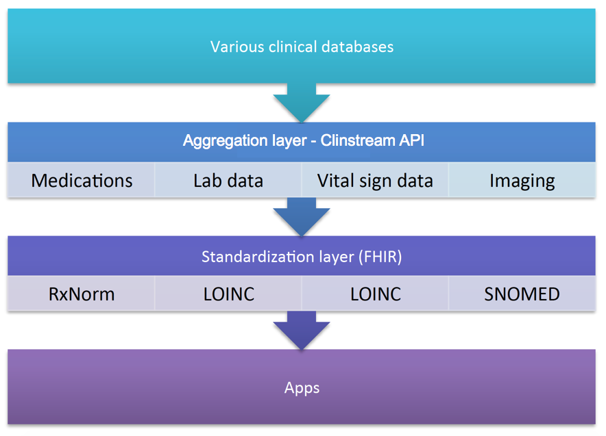

Clinstream API

Schematic of the flow of data through aggregation and standardization steps, making many sources available to apps with a single request.
The Clinstream API is a web service that includes the following:
- Real-time patient data (from multiple EMRs)
- Hospital and Service Census
- Patient demographics, location and care team
- ID number translation: from MRN (specific to facility) to UID (universal across UPHS)
- Lab results
- Orders for inpatients: for labs, studies, medications, diet, and other
- Vital Signs for inpatients
- Study results for inpatients: these are diagnostics that are not labs, namely Radiology, Cardiology, GI/Endoscopy, Derm-path, Neurology, Obstetrics, Sleep center, and Vascular.
- Visit history including inpatient, outpatient, and phone encounters
- Care provider information from the phone book
- Authentication of a UPHS network username and password
Sample Clinstream Queries and Responses
The following are de-identified examples of clinstream requests and responses. For developers using Rails and nodejs, we have helper libraries and an adapter gem that simplify the request process.
//Send Post request to https://secureapps.uphs.upenn.edu/ClinAPI/api/Patient/GetDemographics
//Parameters
{
"serviceName": "sample string 1", //ie Medicine HUP, Infectious Disease 2
"facility": "sample string 2", //HUP, PPMC, PAH
"department": "sample string 3", //ie Cardiology
"providerId": "sample string 4", //provider Penn ID
"uid": "sample string 5", // patient unique identifier
"CalledBy": "sample string 6" // field so that we can track who is making request. put your app's name here
}
//Sample Request below. Notice that not all parameters are needed.
{
"facility": "HUP",
"CalledBy": "myApp"
}
//response is an object with a key 'data' and value is a JSON array containing the data
{'data': [object1, object2, object3, object4]}
//One object shown below
{"UID":"111111", //patient unique identifier
"MVPatientID":111111, //medview ID
"EpicHAR":"1111111", //epic id
"CSN":"2222222", //visit number (SCM)
"HUPMRN":"33333333",
"PMCMRN":"44444444",
"PAHMRN":"5555555",
"FirstName":"John",
"MiddleName":null,
"LastName":"Doe",
"NameSuffix":null,
"DOB":"1520-04-05T00:00:00", //pt DOB
"Sex":"F",
"Race":"AABLA",
"maritalStatus":"W",
"Facility":"HUP",
"Loc_Dept":"FP12",
"Loc_Room_bed":"9999B", //ie 1485B
"Nav_Location":null,
"Nav_Room_bed":null,
"ServiceName":"Medicine HUP, Martin 1A", //serviceName used in other function calls
"HospitalService":"HSP",
"AdmitSourceCode":"EO",
"AdmitSourceName":"EMERGENCY OP UNIT",
"AdmitType":"Emergency admission",
"VisitStartDTime":"2015-06-19T21:50:00", //admision date/time
"AdmitHeightM":"1.52",
"AdmitWeightKG":"47.8",
"FoleyDate":null,
"FoleyReason":null,
"FoleyOrderDtime":null,
"FoleyKBCDtime":null,
"FoleyLatestIndicationDtm":null,
"FoleyRemovalGuidance":null,
"FoleyPendingRemoval":null,
"CentralLineCount":0,
"CentralLineDetail":null,
"AttendingName":"Smith, Jane",
"AttendingPennID":"******", //PennID can be used for queries for provider information
"AdmittingName":"Smith, Jane",
"AdmittingPennID":"*******",
"ReferringName":null,
"ReferringPennID":null,
"PCPName":"Smith, John E",
"PCPPennID":"99999999",
"PrimaryName":"Jones, Jason", //primary provider in SCM
"PrimaryPennID":"99999999",
"CoveringName":"Jones, Jeremy", //covering provider in SCM
"CoveringPennID":"9999999",
"CoveringNurseName":"Smith, Jill",
"CoveringNursePennID":"999999",
"AdmitReason":"MENTAL STATUS CHANGE0600",
"LastUpdateDtime":"2015-06-20T09:46:00"}
//Send Post request to https://secureapps.uphs.upenn.edu/ClinAPI/api/Labs/GetLabs
//Parameters
{
"ServiceName": "sample string 1",
"Facility": "sample string 2",
"Department": "sample string 3",
"ProviderId": "sample string 4",
"UID": "sample string 5", //patient unique identifier
"FromDate": "2015-06-23T18:20:38.6592011-04:00", //iso8601 format
"ToDate": "2015-06-23T18:20:38.6592011-04:00", //iso8601 format
"CalledBy": "sample string 6" //your app name
}
//Sample Request below. Notice that not all parameters are needed.
//Must include a FromDate and ToDate
{
"UID": '12341234',
"FromDate": "2015-06-22" //date alone works or date with time
"ToDate": "2015-06-23"
"CalledBy": "myApp"
}
//response is an object with a key 'data' and value is a JSON array containing the data
{'data': [object1, object2, object3, object4]}
//One object shown below
{"UID":111111, //pt ID
"MVServiceTypeID":12114,
"CernerServiceTypeID":"ABL90VEN", // cerner ID
"ServiceTypeMnemonic":"ABL90 VEN", // lab panel name (use this one)
"PlacerOrderID":null,
"CernerOrderID":730504990,
"AccessionNumber":"000002015173000364", // ID# by lab
"DiagServiceID":"GL",
"OrderDate":"2015-06-22T01:25:17", // date order was placed
"DrawnDate":"2015-06-22T01:21:00", // date order drawn
"OrderLastUpdate":"2015-06-22T01:25:20", // last updated (in case of labs that get updated several times)
"EffectiveOrderDtime":"2015-06-22T01:21:00",
"EffectiveStatus":"F", // status
"CernerObsTypeID":"pCO2 Ven", // lab test name
"ObsTypeMnemonic":"pCO2 Ven", // lab test name (use this one)
"UnitsID":19,"Units":"mmHg", // units of result
"RangeID":2221, //ignore
"Range":"40-50", //normal range
"AbnormalFlag":null, // ie critical, normal etc
"ResultStatus":"F ",
"Value":"49", // value of result
"Corrected":"T",
"ResultDate":"2015-06-22T01:21:11",
"ObsLastUpdate":"2015-06-22T01:25:20"},
//Send Post request to https://secureapps.uphs.upenn.edu/ClinAPI/api/Orders/GetOrdersAll
//Parameters
{
"FromDate": "2015-06-23T18:40:52.1224277-04:00",
"ToDate": "2015-06-23T18:40:52.1224277-04:00",
"UID": "sample string 1",
"OrderType": "sample string 2",
"OrderName": "sample string 3",
"Unit": "sample string 4",
"Facility": "sample string 5",
"Service": "sample string 6",
"CalledBy": "sample string 7"
}
//Sample Request below. Notice that not all parameters are needed.
//Must include a FromDate and ToDate
{
"UID": '12341234',
"FromDate": "2015-06-22" //date alone works or date with time
"ToDate": "2015-06-23"
"CalledBy": "myApp"
}
//response is an object with a key 'data' and value is a JSON array containing the data
{'data': [object1, object2, object3, object4]}
//One object shown below
{
"ClientGUID":12314212312312312,
"ChartGUID":124123123123,
"ClientVisitGUID":123123124124,
"Facility":"HUP",
"VisitType":"Inpatient",
"CareLevelCode":"HUP ICU",
"Service":"Pulmonary",
"UID":"12341234", //pt UID
"MRN":"421321312", //hospital MRN
"VisitIDCode":"129038697", //hospital visit ID
"AdmitDtm":"2015-06-21T08:56:00", //admit date
"DischargeDtm":null,
"CurrentLocation":"MICA-0965-A",
"OrderingLocation":"MICA-0965-A",
"OrderName":"Blood Culture, Adult", //order name
"OrderSetName":"Blood Cultures, Adult", // order set
"OrderType":"Diagnostic", //this includes diagnostic, Medication, other
"OrderReviewCategory":"Laboratory", //similar to order type but has more categories Pharmacy , Laboratory , IVs , Anticoagulants etc
"OrderPriorityCode":"STAT",
"OrderedDose":null,
"OrderEnteredDtm":"2015-06-22T10:15:17.51",
"OrderStartDtm":"2015-06-22T10:15:17.51",
"OrderStopDtm":null,
"OrderStatus":"Final Results Rcvd.",
"OrderGUID":12312313213,
"OrderingProviderGUID":123123123123,
"OrderingProvider":"Smith, Jane", //ordering provider
"OrderRoleType":"Physician",
"Frequency":null,
"MDCollect":null,
"RNCollect":null,
"PhlebCollect":"Phleb-STAT",
"StartingInstructions":null,
"Route":null,
"Description":"\r\nCollection Date:22-Jun-2015 Phleb Collection Time:STAT\r\nSpecimen:Blood Peripheral/non line-BL P"
}
//This call will return all data in the flowsheets in SCM, not just vital signs.
//Send Post request to https://secureapps.uphs.upenn.edu/ClinAPI/api/Vitals/GetVitals
//Parameters
Sample:
{
"FromDate": "2015-06-23T18:54:40.744445-04:00",
"ToDate": "2015-06-23T18:54:40.744445-04:00",
"UID": "sample string 1",
"VitalName": "sample string 2",
"CalledBy": "sample string 3"
}
//Sample Request below. Notice that not all parameters are needed.
//Must include a FromDate and ToDate
{
"UID": '12341234',
"FromDate": "2015-06-22" //date alone works or date with time
"ToDate": "2015-06-23"
"CalledBy": "myApp"
}
//response is an object with a key 'data' and value is a JSON array containing the data
{'data': [object1, object2, object3, object4]}
//One object shown below
{
"ClientGUID":11112431231,
"ChartGUID":1231231212,
"ClientVisitGUID":123123123,
"Facility":"HUP",
"VisitType":"Inpatient",
"CareLevelCode":"HUP ICU",
"Service":"Pulmonary",
"UID":"12341234",
"MRN":"1231231",
"VisitIDCode":"14123131232",
"AdmitDtm":"2015-06-21T08:56:00",
"DischargeDtm":null,
"CurrentLocation":"MICA-0965-A",
"ObsSetGUID":null,
"ObservationItemGUID":12312312,
"ParameterGUID":12312312312,
"Parameter":"Respirations (breaths/min)", //field name
"Field":"Respirations (breaths/min)", //field name
"Value":"14", //value
"RecordedDtm":"2015-06-22T15:21:00"
}
//Send Post request to https://secureapps.uphs.upenn.edu/ClinAPI/api/Meds/GetMedTasks
//Parameters
{
"FromDate": "2015-06-23T19:01:05.6481705-04:00",
"ToDate": "2015-06-23T19:01:05.6481705-04:00",
"UID": "sample string 1",
"MedName": "sample string 2",
"CalledBy": "sample string 3"
}
//Sample Request below. Notice that not all parameters are needed.
//Must include a FromDate and ToDate
{
"UID": '12341234',
"FromDate": "2015-06-22" //date alone works or date with time
"ToDate": "2015-06-23"
"CalledBy": "myApp"
}
//response is an object with a key 'data' and value is a JSON array containing the data
{'data': [object1, object2, object3, object4]}
//One object shown below
{
"ClientGUID":12312312312,
"ChartGUID":123123123123,
"ClientVisitGUID":123123123,
"Facility":"HUP",
"VisitType":"Inpatient",
"CareLevelCode":"HUP ICU",
"Service":"Pulmonary",
"UID":"12341234",
"MRN":"352341",
"VisitIDCode":"12312312",
"AdmitDtm":"2015-06-21T08:56:00",
"DischargeDtm":null,
"CurrentLocation":"MICA-0965-A",
"OrderingLocation":"MICA-0965-A",
"OrderName":"LORazepam infusion 100 mg in 50 mL -", //taken from med order
"OrderedDose":null,
"OrderEnteredDtm":"2015-06-21T21:15:37.48",
"OrderStartDtm":"2015-06-21T21:15:00",
"OrderStopDtm":"2015-06-22T10:04:00", //expiration/stop time
"OrderStatus":"Discontinued", //status
"OrderGUID":12312312,
"OrderTaskOccurrenceGUID":12312312321,
"PerformedProviderGUID":123123123,
"AdminID":2,
"TaskDtm":"2015-06-22T05:17:00",
"TaskStatusCode":"Performed", //expired, performed, pending etc
"Route":"intraVENOUS infusion",
"TaskDose":null,"TaskReason":null,
"TaskComment":null,
"PerformedRole":"Registered Nurse",
"RateAmount":"0.5", //rate of the infusion at this time. each time it is charted in MAR it will show up here. otherwise would also get dose of med given
"RateUOM":"mg/Hr"
}
//Send Post request to https://secureapps.uphs.upenn.edu/ClinAPI/api/Studies/GetStudies
//at this time, studies does not return the text of radiology reads
//Parameters
{
"ServiceName": "sample string 1",
"Facility": "sample string 2",
"Department": "sample string 3",
"ProviderId": "sample string 4",
"UID": "sample string 5",
"FromDate": "2015-06-23T19:07:08.0824291-04:00",
"ToDate": "2015-06-23T19:07:08.0824291-04:00",
"CalledBy": "sample string 6"
}
//Sample Request below. Notice that not all parameters are needed.
//Must include a FromDate and ToDate
{
"UID": '12341234',
"FromDate": "2015-06-22" //date alone works or date with time
"ToDate": "2015-06-23"
"CalledBy": "myApp"
}
//response is an object with a key 'data' and value is a JSON array containing the data
{'data': [object1, object2, object3, object4]}
//One object shown below
{
"UID":12341234,
"ResultDtime":"2015-06-21T19:53:06",
"ResultCatCode":"RA",
"ResultCatDesc":"Radiology",
"Location":"RAD HUP DULLES GROUND XRAY",
"ResultDesc":"XR CHEST 1 VIEW", //study name
"ResultStatusCd":"F",
"ResultStatusDesc":"Final",
"ResultValue":"https://mv.uphs.upenn.edu/MV2.0/Prod/Radiology/ExamSummaryEpic.aspx?S=8FCD354E-5E2E-43D8-A1A8-24A0CE&P=45569431&ID=26274450", //link to result. Link ONLY works in internet explorer. Session is good for 15 minutes. Some studies have links while others give the read
"ResultPointer":"http://mv.uphs.upenn.edu/Classic/Prod/MV_CLINICAL/view_patient_image_byaccno.html?S=8FCD354E-5E2E-43D8-A1A8-C890BF24A0CE&P=45569AC=26274450", //link to result. link only works in internet explorer and session is only good for 15 miutes
"AccessionNumber":"26274450",
"PrimaryAccessionNumber":"23432342342",
"PointerOKonMobile":0,
"ResultUniqueId":"RA:23423422"
}
//Send Post request to https://secureapps.uphs.upenn.edu/ClinAPI/api/Auth/AuthenticateUser/
//function allows to verify username and password are correct in medview
//Parameters
{
"Domain": "sample string 1",
"Username": "sample string 2",
"Password": "sample string 3",
"CalledBy": "sample string 4"
}
//Sample Request below. Domain should be uphs
{
"Domain": "uphs",
"Username": "gitelmay",
"Password": "thepassword",
"CalledBy": "myapp"
}
//if the username and PW are valid you get teh response below
//response is an object with a key 'data' and value is a JSON array containing the data. Array will usually only have one object
{
"data":
[{
"UserFullname":"Gitelman, Yevgeniy",
"EmailAddress":"Yevgeniy.Gitelman@uphs.upenn.edu",
"PennID":"11111111","MVUserID":2222222,"HasMVClinicalAccess":1,
"MVClinicalAccessGroup":"Researcher (full access)",
"PBOfficeNumber":"2156622250",
"PBCellNumber":"6465964528",
"PBPagerNumber":null,
"PBPreferredTextAddress":"6465964528@txt.att.net",
"HRRoleFlags":";IsResearcher;"
}]
}
//invalid username and pw gets the response
{"data":null,"error":{"code":-1,"msg":"Logon failure: unknown user name or bad password.\r\n (Type:System.Runtime.InteropServices.COMException)"}}
Sandbox Server
The Clinstream API can be accessed by the sandbox.
What is the Sandbox Server?
The Sandbox is a linux server hosted behind the UPHS firewall. It allows us to host websites viewable from anywhere within the UPHS network. It runs nginx and is configured for multiple development environments, including ruby on rails and nodejs. Multiple databases are set up as well, including MySql. Additional environments can and will be added based on demand. Once given access, users can login to the server via commandline/terminal.
What is the purpose of the Sandbox Server?
The Sandbox is here to reduce the barrier to entry to develop new and innovative web applications. It provides a secure environment for developers to build applications. It has tools for accessing patient data and it allows developers to host sites with patient data without the usual regulation and beurocracy.
The Sandbox Server is not meant to be a full scale production server. The database is not routinely backed up and it does not have the fail-safes that production servers at UPHS have. Rather, the Sandbox can be viewed as step 1 to test a new idea, and the best projects and ideas will be scaled to full production support with additional support and safeguards.
What are the requirements to access the Sandbox Server?
All users of the Sandbox must complete HIPAA training to have access to patient data. Potential users are physicians working on their own projects or developers (including engineering students) working with clinicians on specific quality improvement or research projects. All users will need to be on the VPN to access the server.